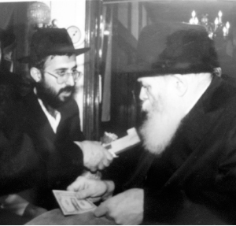

Two Silver Dollars and a Twofold Miracle
“At that moment I simply became speechless unable to loosen my tongue. This time, it was a different story – my daughters’ health weighed in the balance, and who knew if I would have another opportunity to ask the Rebbe for a bracha. I was very disappointed in myself.” An amazing story told by Rabbi Mordechai (Motty) Yadger from Tzfas about a miracle that began more than twenty years ago and reached its mesmerizing conclusion this past year.
Translated by Michoel Leib Dobry

“A year ago, we experienced the final chapter of this amazing story, which began during Chanukah 5752. The conclusion came when our two daughters, now married, were blessed with additions to their respective families after much waiting. One had twins, while the other had her second child, a boy, after five years. When this happened, I felt that the time had come to tell our story.”
One could easily hear the deep emotion in his voice as Rabbi Yadger described the chain of events. He recalled every detail of the twenty-year old episode as if it happened just twenty minutes earlier. When I heard the whole story, the great concern that engulfed him and his wife at the time, as it did last year, and the tremendous miracles they experienced on both occasions, it was quite easy to understand why he became so moved.
The first people to hear this incredible story were the members of the Romanian shul in Tzfas’ Canaan neighborhood, home of one of the city’s first Chabad minyanim and where Rabbi Yadger has been davening for many years. His son-in-law told the story a second time during the bris mila celebration for his newborn son, creating much excitement among the assembled guests, many of whom were not Lubavitcher Chassidim.
We are now pleased to publicize it for the third time, here for the Beis Moshiach readership.
THE TRIP THAT COULD NOT BE DELAYED
“As Kislev 5752 approached, I had a fervent desire to travel to 770 and spend the Chanukah holiday with the Rebbe, Melech HaMoshiach. For several years after our marriage, my wife and I had been unable to make the trip for various reasons, such as the birth of our daughters and my heavy workload in the field of education. On this occasion, I felt that I had to come to Beis Chayeinu – no matter what.
“The tremendous urge is something hard to explain in words. I remember what I was feeling all too well. It could best be described as the longing of a son for his father, a Chassid for his Rebbe, something beyond all logic.
“My close friends suggested that I delay my trip until the following Tishrei, when the spiritual harvest from being with the Rebbe is at its fullest. However, my desire was so strong that nothing could possibly change my decision. ‘I’m going now,’ I told everyone, ‘and with G-d’s help, I’ll go for Tishrei as well.’
“Several months earlier, my two daughters were stricken with an unusual skin ailment. While it started as just a small fungus on their hands, it quickly spread over their entire bodies, from head to foot. The situation was most unpleasant for girls age six and seven, to put it mildly. The most frightening part was to stand by totally helpless as we watched this rash grow larger with each passing day. Incredibly, the fungus only struck the two girls, while no one else in the house seemed effected.
“It didn’t take long before we realized that this wasn’t something that would just fade away with time; it was far more serious than that. We immediately took the girls to Dr. Lampit, one of Tzfas’ most reputable pediatricians. He examined them, made a diagnosis, and gave us a prescription for some ointments and other medications. Days and weeks passed, but none of the prescribed drugs were providing any cure. On the contrary, the fungus continued to spread on each of the girls simultaneously. We also consulted with other physicians and tried a variety of different treatments, but nothing seemed to help.”
DR. METZGER: “THERE’S NO REMEDY TO THIS PROBLEM”
“When we saw that the situation was getting worse and how the girls were suffering, we again went to see Dr. Lampit. He decided to refer us to a leading medical expert in children’s dermatology, Dr. Metzger, who worked on the staff of Beilinson Hospital in Petach Tikva.
“He wrote out a referral, describing the ailment and the treatment administered thus far, and made an appointment for us to see this doctor. We hoped that this specialist could find a remedy to this problem that had been as of yet unsolvable.
“We made our way to the medical center. After the doctor had completed his examinations, he determined that there was no cure for the ailment. The only thing he could suggest was another ointment to relieve the pain. I remember his words to this day: ‘There is no remedy to this problem.’
“We left his office perplexed, but above all, beside ourselves with worry. If this Dr. Metzger couldn’t find a cure, then who could? Had it been decreed ch”v upon our daughters to live the rest of their lives with this irritating condition?
“We returned home deeply depressed, as we saw the girls suffering from sores and itching. Their skin was covered with the ugly signs of fungal infection. It was a sight that I wouldn’t wish upon any parent.
“As a result, when I informed my wife of my decision to fly to Beis Chayeinu, she gave her consent on the condition that I get up the nerve to request a bracha from the Rebbe for our daughters. Naturally, I agreed. Now, I just needed a little courage to meet the condition.
“In hindsight, if I hadn’t been so stubborn about coming for Chanukah and postponed my trip until the summer, I wouldn’t have been privileged to pass by the Rebbe twice during the dollars distributions that took place during the Festival of Lights.”
DOLLARS DISTRIBUTION AND A MISSED OPPORTUNITY
“A few days before the Chanukah holiday, I landed at Kennedy Airport in New York for my first visit to 770 in ten years. The excitement was great indeed. I felt like a son in exile finally returning home to his father. Tears welled in my eyes.
“Several days later, on the first evening of Chanukah, the Rebbe gave out dollars, and I was privileged to receive a dollar directly from the Rebbe’s holy hand. However, despite my thorough preparations, when I was standing before the Rebbe, I couldn’t manage to say a word.
“I walked out of 770 with the Rebbe’s dollar in my hand, but I felt that I had wasted a perfect chance to ask him for a bracha in a moment of truth and genuine need.
“I remembered that every time I would come to 770, I never managed to say ‘SheHechiyanu’ when I would see the Rebbe for the first time. At that moment, I simply became speechless, unable to loosen my tongue. This time, it was a different story – my daughters’ health weighed in the balance, and who knew if I would have another opportunity to ask the Rebbe for a bracha. I was very disappointed in myself.”
A SURPRISE: RECEIVING CHANUKAH GELT
“To my great surprise and the surprise of all the Chassidim in Crown Heights, on the day before my return flight to Eretz Yisroel, the gabbai announced that the Rebbe would give out dollar bills for tz’daka at two o’clock that afternoon, together with a silver dollar for Chanukah gelt. This time, I was determined not to let this opportunity pass me by.
“The dollars distribution took place upstairs in 770, and a long line of people quickly formed. I stood in the first floor hallway, filled with a sense of great anxiety. It was clear to me that no matter how nervous I might become, I must ask the Rebbe for a bracha for my daughters. As I waited for my turn, I kept practicing the words I would say to the Rebbe. Every few minutes, I made some changes to my request, making it short and to the point. The final version was: ‘Refua shleima la’banot’ – a complete recovery for the girls. I hoped and prayed that my voice wouldn’t fail me this time.
“After a reasonable wait, I was finally standing before the Rebbe. As promised, I got up my nerve and asked for a bracha. The Rebbe nodded his head and said, ‘Bracha v’hatzlacha.’ I then received from the Rebbe’s holy hand a bag meant to contain a dollar bill and a silver dollar.
“As I went outside, shaking with excitement over the momentous encounter, I opened the bag that the Rebbe had given me. To my great astonishment, I saw that it contained three dollars – a dollar bill and two silver dollars. Everyone else had received just one silver dollar. Confused and amazed, I tried to catch my breath and collect my thoughts. I walked back inside and told one of the secretaries about the ‘mistake.’ ‘Should I give the second dollar back?’ I asked.
“‘The Rebbe makes no mistakes,’ the secretary replied with a tone of Chassidic musar.
“I returned to the home of my hosts in a flood of emotion. I asked for a bracha for my two daughters, and the Rebbe, the faithful shepherd, gives me two silver dollars. I felt that the Hand of G-d had placed the second dollar in the bag. I was overcome with a feeling of intense love for the Rebbe.
“When I returned to Eretz Yisroel the following day, I was certain that we had no reason to worry any longer. True, the specialist had made his diagnosis, but the People of Israel have a leader in this generation.
“And so it was. Just as in the tales of the holy Baal Shem Tov, the great miracle came to pass. We didn’t do anything except spread a little bath oil; and not just the improbable, but the impossible happened. The fungus that had spread deeper and deeper suddenly began to fade until it disappeared entirely. Their skin soon looked as if there had never been a problem to begin with.
“We made an appointment with Dr. Lampit. I wanted him to see this with his own eyes. When he examined the girls, he too was shocked and completely surprised. According to the big specialist, Dr. Metzger, this was a problem that they would have to carry with them for the rest of their lives. Yet, lo and behold, it had totally vanished without a trace, from both of them!
“Naturally, I told the doctor about my trip to Beis Chayeinu, the bracha from the Rebbe, and the Divine Providence of receiving two silver dollars from him. He was deeply moved by this, and he admitted that some Heavenly Power had intervened in finding a solution to this problem.”
HELLO
Rabbi Yadger stops his story for a moment, and then he adds the final chapter, just as amazing, which took place last year:
“My two daughters grew up, got married, and established their own homes. The older daughter had a boy a year after her wedding. However, four years later, she and her husband were still waiting for another child. The younger daughter had been married for nearly three years, and we were hoping to hear good news from her as well.
“One night, as I was sitting and thinking about them, I remembered the silver dollars that the Rebbe had given them for a complete recovery. ‘Why are you keeping them to yourself,’ I scolded myself. ‘The Rebbe gave the silver dollars for the girls, and they’re old enough already to take care of them on their own.’ Of course, I hoped that by giving them the silver dollars, it would serve as a segula to bring personal salvation to each of them.
“I thought about it and acted accordingly. The very next day, I called my daughters and reminded them of the forgotten memories of the silver dollars that the Rebbe had given me for them. I then asked to come to the house and take them. My older daughter took the silver dollar and kept it with her at all times. Just two months later, she gave us the good news that she was expecting another child.
“As for my younger daughter, after she put the silver dollar on a chain that she wore, she too learned shortly thereafter that she would be having a baby. The family was in shock. We clearly felt that the silver dollars had been the catalyst for yet another miracle after several long and arduous years of waiting.
“Nine months later, the older daughter gave birth to another son, while the younger daughter gave birth to twin girls. We were simply overjoyed. It was at this point that I felt a strong need to publicize the miracle we had been privileged to experience,” said Rabbi Yadger as he concluded his incredible story.
“We are privileged to have the Rebbe with us, doing miracles and wonders today just as he has done in the past. All that remains for us now is to wait for the great joy of the Rebbe’s hisgalus at the True and Complete Redemption.”
Nosson Avrohom. "Two Silver Dollars and a Twofold Miracle." Beis Moshiach, no. 900 (October 29, 2013).